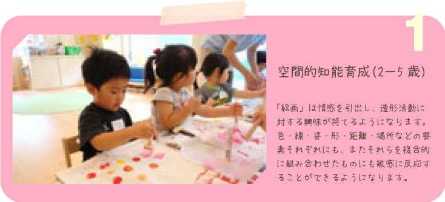
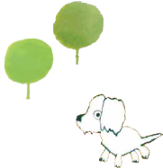
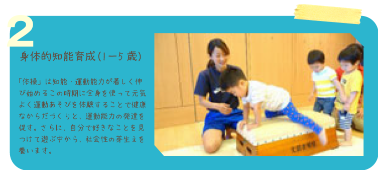
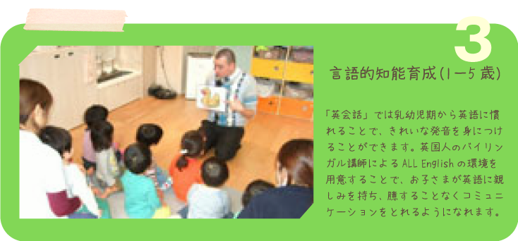
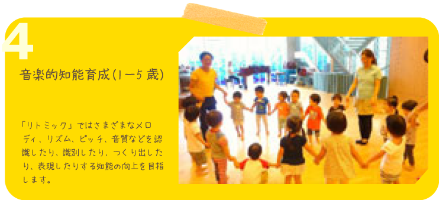
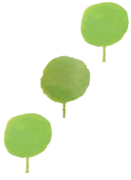
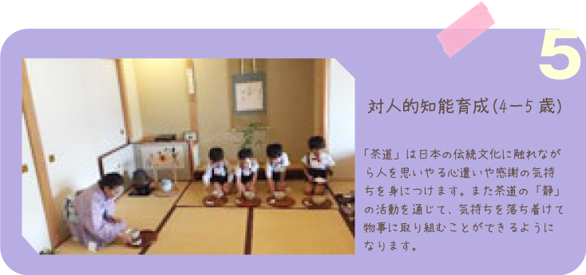
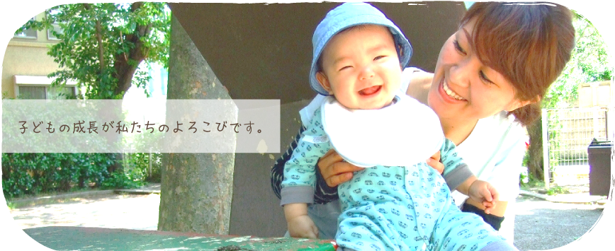
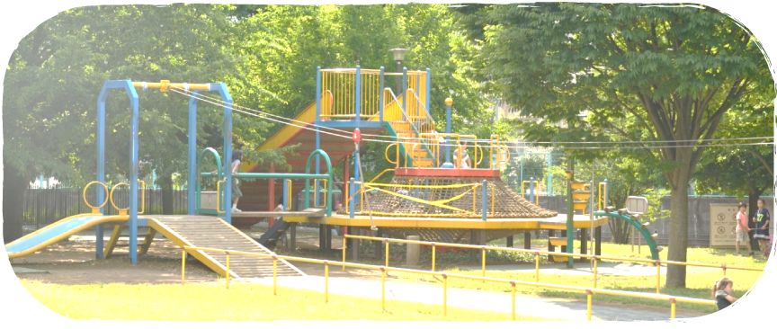

こんにちは、Picoナーサリです。
70年の長い歴史を持つ幼稚園が立ち上げた保育園、それがPicoナーサリです。
学校教育として位置付けられた幼児教育を基に、子どもの発達に即した保育・教育カリキュラムを考えます。
成長スピードが速い乳幼児期にふさわしい環境をつくり、子どもたちの興味や関心を引き出します。
のびのびと過ごせる自然・物的環境・人的環境を整え、自ら自然とかかわる意欲を育みます。
「健全な成長と、限りない能力の開花」
子どもたちの成長を保育はもちろん、幼児教育の則面からも最大限引き出す保育園。
それが私たちの保育園Picoナーサリです。
統括挨拶
社会福祉法人風の森
統括 野上美希
子どもたちの知的好奇心に刺激を与え、
才能を伸ばすPicoナーサリ5つの教育特徴







これらの教育活動は脳のバランスよい成長を重視し、「脳・心・体」を育てる特別教育です。
乳幼児の脳の持つ潜在能力を多方面に伸ばし、「創造力・思考力・判断力・協調性・集中力」など、
豊かに生きていくうえで必要な能力を総合的に開発します。
Picoナーサリは豊かな人的環境であふれています。

私たちは、国の基準を大きく上回る職員・保育士を配置しています。
豊かな経験を持った保育士、若さあふれる職員、
みんな何より子どもの保育に情熱を持っています。
あらゆる保育者の暖かい対応で、子どものちょっとした心の動きに心を配ることができます。
保護者と職員・保育士たちが、子どもの成長を共によろこぶ。
そのために、IT化を積極的に取り入れ、情報交換もより早く、より的確にをモットーに、
子どもの成長の姿を保護者と共有することに努めています。
Picoナーサリの保育を是非その目で確かめにきてください。
16万坪の広大な自然の中で育つ子どもたち

Picoナーサリ和田堀公園は、国家戦略特区として都立和田堀公園内に開設されます。
杉並区という都会の利便性の高いエリアにおいて、広大な公園の中で、動物や植物の成長に触れ、
季節の移ろいを肌で感じながら、豊かな心を育むことができます。
国立青少年教育振興機構によると、
「子どもの頃の自然体験が豊富なほど、やる気や生きがいを持っている人が多い」
という報告があります。
子どもたちの“生きる力”を育む自然環境がPicoナーサリ和田堀公園にはあるのです。